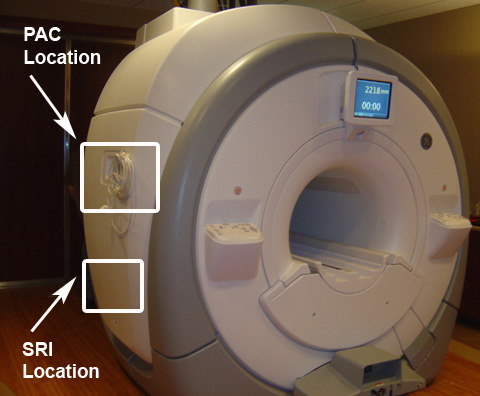
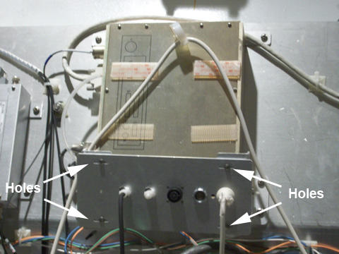

Operating Documentation
Direction 5670000, Rev# 1
Optima MR450w 1.5T Service Methods
Module Version 4.0, Version Date 1/20/10
Operating Documentation |
| Required Persons | Preliminary Reqs | Procedure | Finalization |
|---|---|---|---|
| 1 | Not Applicable | 30 minutes for PAC and 30 minutes for SRI | 5 mins |
This document explains the:
Procedure for replacement of the Physiological Acquisition Controller (PAC) assembly on a fixed site system.
Procedure for replacement of the Scan Room Interface (SRI-4) assembly on a fixed system.
| Item | Qty | Effectivity | Part# | Manufacturer | |
|---|---|---|---|---|---|
| Non-Magnetic Tool Kit | 1 | - | 5112581 | - | |
| Item | Qty | Effectivity | Part# | Manufacturer | |
|---|---|---|---|---|---|
| Refer to the FRU manual | Varies | - | - | - | |
| ||||
| Electrocution Hazard! | ||||
| Dangerous Voltages are Present around the Magnet Enclosure and Rear Pedestal electronics. | ||||
| Remove Power to The Magnet Enclosure and LOTO for RF Amplifier and PEN Cabinet (Magnet Room Electronics). |
Perform Lock-Out Tag-Out procedure (see LOTO for RF Amplifier and PEN Cabinets (Magnet Room Electronics)).
The PAC is located under the left side of the magnet enclosure, near the top of the magnet. (See Illustration 1.)
Illustration 1: PAC and SRI Location

Remove the left side covers (see Skirt Cover Removal and Install) to expose the PAC. Disconnect all cables from the I/O panel except the white PPG cable (which is permanently attached). Carefully remove and slide the cover around the PPG cable. Take care to not damage the PPG cable while removing the cover. Illustration 2 shows the PAC exposed after the side covers are removed.
Illustration 2: PAC and SRI Exposed

Disconnect all cables attached to the side of the PAC.
Remove six (6) screws holding the PAC and PAC interface to the electronic rack.
Place the PAC in the proper location and install in the reverse order that it was removed.
Reconnect all cables.
Replace the side enclosure panels.
Check the alignment of the PAC with the enclosure in all three planes. There are 8 screws that allow for adjustment up/down, left/right and in/out. The PAC I/O panel should be adjusted such that it lines up with the slot in the enclosure in the left/right and up/down plane and also should be adjusted in/out so the gap between the I/O panel and the enclosure is less than 1 mm. (See Illustration 3.)
Illustration 3: PAC Alignment

Remove Lockout / Tagout hardware.
Restore power.
Turn off power to the PDU by following LOTO for the PGR PDU/Gradient Subsystem.
| NOTE: | The PDU must be powered down completely to prevent damage to system electronics. |
The SRI is located under the left side of the magnet enclosure, toward the rear of the magnet. (See Illustration 1.)
Remove the left side covers (see Skirt Cover Removal and Install) to expose the SRI. (See Illustration 2.)
| NOTE: | Be sure to remove the temp sensor box attached to the SRI and reattach to new SRI being installed. |
Disconnect the cables attached to the SRI.
Remove four screws securing the SRI to the electronics rack. Unstrap and remove the SRI.
Remove the straps from the SRI. These straps will be used when installing the new SRI.
Place the new SRI in the proper location and install in the reverse order that it was removed.
| NOTE: | Be sure to mount the temp sensor box onto the new SRI. |
Reconnect the cables.
Replace the enclosure panels.
Remove Lockout / Tagout hardware.
Restore power.
Set up a test scan and test the system operation.